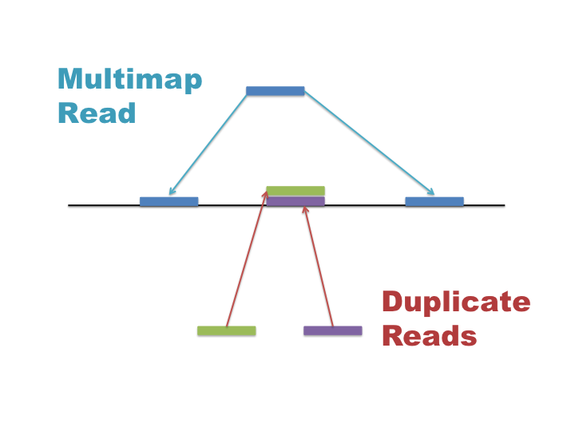
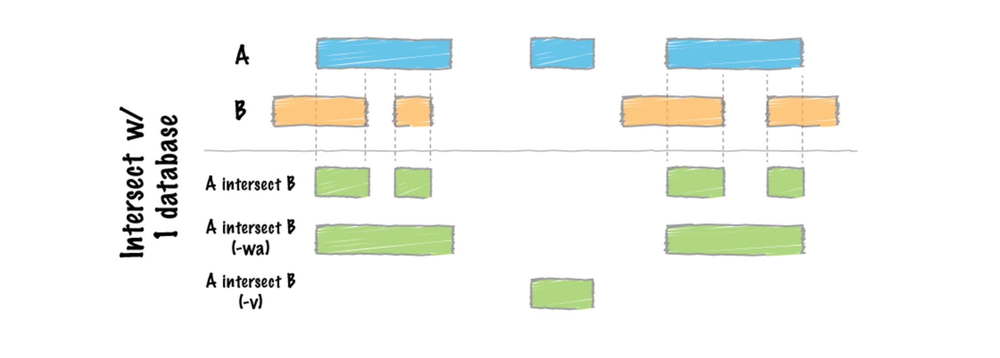

In this workshop we are going to align our ChIP-seq reads to the yeast reference genome. There are many tools available for mapping reads each with their own purposes and strengths. We are going to use BWA as it is suitable for aligning single end short ChIP-seq reads and has a reasonable balance of accuracy and speed.
First, we need to select a reference genome to align to. Every time a reference genome is released or updated it is given a new name, often referred to as the genome build or assembly (..hg18, hg19, hg38). It is important to realise that different builds of the same genome are different sequences and thus their co-ordinate sytems are incompatable. For instance position 10000000 on chr1 is T in hg19 and G in hg38.
We are going to map our reads to the latest release of the yeast genome sacCer3. We need to create an index file from the sacCer3 sequence so that BWA can quickly access the reference sequences. Luckily many of these indexes are pre-computed on our servers and stored under the ~genomes directory so you would only need to run this step for a new genome:
#bwa index -p ~genomes/s.cerevisiae/sacCer3/bwa_indexes/sacCer3 -a is ~genomes/s.cerevisiae/sacCer3/sacCer3.faOnce we have an index we can align our reads to the sacCer3 genome with BWA. This will take ~5 minutes to run so let's get it started:
First create a new directory for the alignments and sub directories for each sample to keep your data organsied:
mkdir bwa_out
cat samples.txt | parallel -j 4 mkdir bwa_out/{}Then run bwa on each of your samples. Note that we are redirecting the output to a file using > so we put the full command in quotes for parallel to execute.
cat samples.txt | parallel -j 4 "bwa mem -t 5 -R '@RG\tID:{}\tPL:ILLUMINA' -M ~genomes/s.cerevisiae/sacCer3/bwa_indexes/sacCer3 fastq/{}.trim.fq.gz > bwa_out/{}/{}.sam"This is a good time to go make a coffee!
The standard output for most mapping software is SAM (sequence alignment/map format). SAM files contain many columns that describe the position of each alignment as well as information on the quality of the alignment, mismatches, the number of times a read mapped, mapping of paired ends and other custom flags and statistics. SAM files can be very large so there are compressed alternatives BAM and CRAM. The samtools package has many useful tools for viewing and manipulating files in SAM format. We will use some of these below.
Take a look at the SAM format specification and the first few lines of your SAM output using samtools:
samtools view bwa_out/Reb1_R1/Reb1_R1.sam | less The second column is the SAM flag and contains coded information about each alignment. Use the Explain SAM flags resource to find out more about the alignments in your file.
We can also see the samtools header using the -h flag which contains information on the parameters and indexes used to create the file.
samtools view -h bwa_out/Reb1_R1/Reb1_R1.sam | lessWe can use samtools to sort the sam file by co-ordinate and output in the binary format BAM to save disk space. The BAM file can also be indexed to allow quick programmatic access for visualisation and processing. We can feed multiple commands into our call to parallel by separating them with a semi colon ;.
cat samples.txt | parallel -j 4 "samtools sort bwa_out/{}/{}.sam -o bwa_out/{}/{}.bam -T bwa_out/{}/{} -O BAM; samtools index bwa_out/{}/{}.bam"Take a look at the contents of the bwa_out directory now. The -lh flag prints out a directory in list view with human readable file sizes.
ls -lh bwa_out/* Notice the difference in size between the SAM and BAM files and the .bai file which is the bam index. Let's look at one of the BAM files using samtools idxstats to see where our reads align
samtools idxstats bwa_out/Reb1_R1/Reb1_R1.bamThe third column represents the number of alignments to each chromosome and at the bottom we can see some reads which have not mapped at all.
Now that we have aligned our reads we may want to do some filtering before any downstream analysis. Make sure you are aware of the alignments that are reported by your mapping program and the parameters used. For instance, are unmapped reads reported? Are all alignments to repeats reported or just one? Are paired-end alignments still reported if only one end maps?
There are many ways to filter your BAM files with samtools and other programs to remove unwanted alignments that may negatively affect your downstream analysis. This will not be covered in depth here, instead we will simply remove all non-uniquely mapped reads. These reads map to multiple regions of the genome and can skew classification of peaks in our data. In this case we are not interested in looking at repeat regions of the genome so we will remove these reads. This can be done by filtering out all reads with mapping quality less than 20.
Multimap and duplicate reads are often confused so it is important to understand what these are and how they affect your data:

Multimap reads are difficult to analyse as their ambiguity can confound results. Many applications require the use of unique alignments only, thus multimap reads need to be removed from your BAM file. Aligners assign a mapping quality to each read (column 5 in BAM) between 0 and 255 that describes its confidence in the alignment position. Assigned mapping qualities differ between mappers and BWA uses a phred score to measure the accuracy of an alignment. Filtering out reads with a mapping quality < 20 means that all remaining alignment positions are 99% accurate. We can use samtools view -q to filter based on mapping quality
cat samples.txt | parallel -j 4 "samtools view -b -q 20 bwa_out/{}/{}.bam -o bwa_out/{}/{}.uniq.bam; samtools index bwa_out/{}/{}.uniq.bam"Note that there are aligners and analysis packages that attempt to deal with multimap reads and assign weights to each alignment, although methods are still in development. If you are interested in repeat elements or don't want to discard any potentially useful information then you will need a strategy to deal with these reads.
Duplicate reads are often observed as tall spikes in your read depth profile where reads are stacked directly on top of each other. A high level of duplication in your library is often a sign of over amplification by PCR and we may want to remove this bias from our result. However, these reads may also derive from separate fragments of DNA in your sample, thus we would be removing real data. It is often a good idea to mark your duplicate reads and produce outputs both with and without duplicates for comparison. Read more about duplication bias here.
The Picard package has many useful utilities for manipulating SAM/BAM files. The MarkDuplicates tool will check the alignment positions for duplicate reads and mark or remove them from your data depending on how you wish to treat them.
Using paired-end reads or random primers in your library preparation can help separate some of the original reads from PCR duplicates.
The ENCODE project produced 100s of NGS datasets and found that certain regions of the genome were consistently prone to overinflated read depths regardless of the sample or preparation. Some of these are repeats of variable copy number, others are likely to be similar to repeat regions in unsequenced portions of the genome (telomeres, centromeres, satellites etc.). These are typically seen as large towers of reads that dominate your read profiles. It is probably a good idea to remove these regions from downstream analyses or remove the reads that align all together. ENCODE subsequently released genome blacklists for human and mouse, for other species you can identify these regions by eye.
BedTools is an extremely useful tool suite for performing operations on genomic intervals and alignments and comparing multiple datasets. The intersect tool can find overlaps between reads in a BAM file -abam and blacklist regions in a bed file -b and output all the reads that DON'T intersect -v.

In some cases you may also want to remove ribosomal RNA/DNA reads that make up a bulk of your sample.
By default bwa outputs multiple alignments per read if they exist, meaning a read may have many entries within a BAM file. However, bwa will assign one of the best hits as a primary alignment and all the others as secondary. Unmapped reads are also printed to the output file and these two factors mean that the total number of lines does not correspond to the total number of mapped reads.
samtools view can tell us how many lines are in a bam file using the -c flag to count. We can filter alignments using -f or -F on the SAM flag column.
samtools view -c bwa_out/Reb1_R1/Reb1_R1.bam
samtools view -c -F 260 bwa_out/Reb1_R1/Reb1_R1.bam
samtools view -c bwa_out/Reb1_R1/Reb1_R1.uniq.bamTASK What do these numbers equate to?
HINT Use the Explain SAM flags resource.
We can also use fastqc on bam files to look at the quality and statistics for our uniquely mapped reads.
cat samples.txt | parallel -j 4 fastqc bwa_out/{}/{}.uniq.bam
multiqc -o bwa_out bwa_out